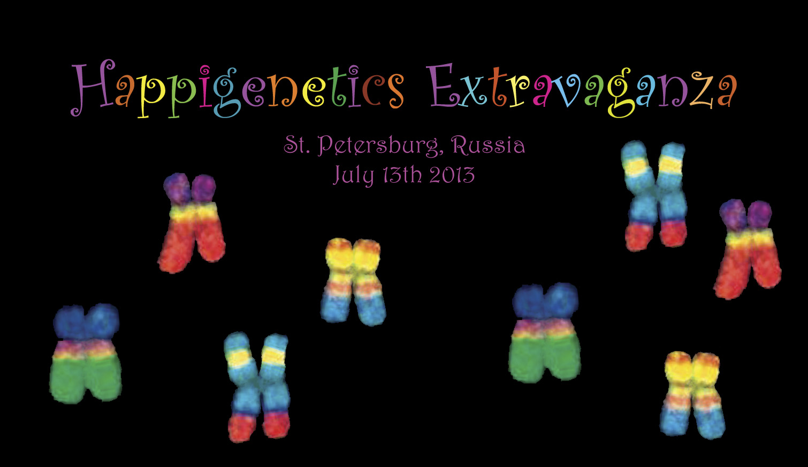

PROJECTS
Summer School of Science
 This project is intended for highly motivated high school students from Croatia and abroad. Working on real scientific problems with their mentors, students develop basic scientific literacy and a network of contacts among experts that will benefit their future careers. At Summer School of Science, around 30 students every year have an opportunity to obtain intense scientific training, while around 10 young scientists gain experience in education. Summer School of Science is comprised of two camps in total duration of 18 days.
This project is intended for highly motivated high school students from Croatia and abroad. Working on real scientific problems with their mentors, students develop basic scientific literacy and a network of contacts among experts that will benefit their future careers. At Summer School of Science, around 30 students every year have an opportunity to obtain intense scientific training, while around 10 young scientists gain experience in education. Summer School of Science is comprised of two camps in total duration of 18 days.
Link: Summer School of Science website
EVO Internship Portal
 EVO Internship Portal is an online platform that helps Croatian university students to find and apply for internships in research laboratories across Europe. In addition to creating a platform, our goal is to offer direct help in writing internship and funding applications. EVO, as a third party, with its rich experience in similar programmes and numerous contacts inside the network of Summer School of Science alumni, will serve as a strong connection between students and laboratories interested in offering research opportunities, therefore contributing to their continuing education and development.
EVO Internship Portal is an online platform that helps Croatian university students to find and apply for internships in research laboratories across Europe. In addition to creating a platform, our goal is to offer direct help in writing internship and funding applications. EVO, as a third party, with its rich experience in similar programmes and numerous contacts inside the network of Summer School of Science alumni, will serve as a strong connection between students and laboratories interested in offering research opportunities, therefore contributing to their continuing education and development.
Link: EVO Internship Portal website
Science meets arts workshop on BIODIVERSITY
 This workshop will take place in Brela, Croatia, on August 25-31 2014. It is organized in collaboration with Prof. Ivan Dikic (Goethe University, Frankfurt) and academic sculptor Ivanka Filipovic as a part of Meeting Art Place (MAP) Brela 2014 Residence Program. It aims at developing open-minded trans-disciplinary approach to public engagement of science among enthusiastic young artists and scientists. It will facilitate combining artistic and scientific practice through projects where participants will experiment with different types of creative expression. Together they will come up with a unique improvised performance broadly themed up around the issue of biodiversity on our planet and exhibit artwork created during the workshop. We hope that such activity may help to overcome artificial barriers between science and arts, provide inspiration for participants’ current activities and shed light on difficult global issues in the contemporary society. We also hope to create positive effects on public awareness and support for sustainable development policies.
This workshop will take place in Brela, Croatia, on August 25-31 2014. It is organized in collaboration with Prof. Ivan Dikic (Goethe University, Frankfurt) and academic sculptor Ivanka Filipovic as a part of Meeting Art Place (MAP) Brela 2014 Residence Program. It aims at developing open-minded trans-disciplinary approach to public engagement of science among enthusiastic young artists and scientists. It will facilitate combining artistic and scientific practice through projects where participants will experiment with different types of creative expression. Together they will come up with a unique improvised performance broadly themed up around the issue of biodiversity on our planet and exhibit artwork created during the workshop. We hope that such activity may help to overcome artificial barriers between science and arts, provide inspiration for participants’ current activities and shed light on difficult global issues in the contemporary society. We also hope to create positive effects on public awareness and support for sustainable development policies.
Organizing team: Branko Durdevic, Alexander Kagansky, Martina Mijuskovic, Lucija Silic.
IMPORTANT! Applications for the workshop are extended until July 20th 2014. For more information, please read the Workshop description and download the Application form.
SiS Catalyst
 Society for Out of Frame Education has been invited as one of the 36 organizations from 20 countries in “mentoring associates” part of FP7 project “SiS Catalyst”. The goal is to exchange experience in science communication, education and social inclusion among different universities, museums and non-governmental organizations. Over 18 months, which is the span of the project, the exchange of experience and knowledge will take place, which is to serve as a platform for future good practice dissemination. Society for Out of Frame Education's partner organization is Paris-Montagne from France. 10 000 EUR obtained will be spent towards the exchange of experience through visits of educators and participants between two associations.
Society for Out of Frame Education has been invited as one of the 36 organizations from 20 countries in “mentoring associates” part of FP7 project “SiS Catalyst”. The goal is to exchange experience in science communication, education and social inclusion among different universities, museums and non-governmental organizations. Over 18 months, which is the span of the project, the exchange of experience and knowledge will take place, which is to serve as a platform for future good practice dissemination. Society for Out of Frame Education's partner organization is Paris-Montagne from France. 10 000 EUR obtained will be spent towards the exchange of experience through visits of educators and participants between two associations.
Link: SiS Catalyst
Google RISE
 The education project that has arisen from collaboration between the Summer Science Factory, Institute for Science and Society Synergy and Society for Out of Frame Education, has been awarded the prestigious Google RISE award (Roots In Science and Engineering). Competition was aimed at projects that encourage children to engage in "STEM"
activities (STEM=science, technology, engineering and mathematics). The award is 15 000 $, which is planned to be used to open laboratories in Cakovec, Split and Zagreb, Croatia. The awarded amount will facilitate buying basic laboratory equipment, cover travel cost for mentors and students between cities and for organizing joint training seminars.
The education project that has arisen from collaboration between the Summer Science Factory, Institute for Science and Society Synergy and Society for Out of Frame Education, has been awarded the prestigious Google RISE award (Roots In Science and Engineering). Competition was aimed at projects that encourage children to engage in "STEM"
activities (STEM=science, technology, engineering and mathematics). The award is 15 000 $, which is planned to be used to open laboratories in Cakovec, Split and Zagreb, Croatia. The awarded amount will facilitate buying basic laboratory equipment, cover travel cost for mentors and students between cities and for organizing joint training seminars.
Link: Google RISE
Happigenetics Extravaganza
 Happigenetics Extravaganza, an experiment in the communication of science and technology through performance art, is a collaboration between Society for Out of Frame Education, Science on Stage (Edinburgh, UK), Coaxil Band (St. Petersburg, Russia) and Sounds of Science (New York, USA). This all-ages interactive modern theater piece is set to be performed on July 13th 2013 in St. Petersburg, Russia, in conjunction with the Federation of European Biochemical Societies (FEBS) annual conference. The overarching goals of this project are to increase the public awareness of experimental biology and research culture, to celebrate the mystical aesthetics of the natural experimentation process, and to dissolve culturally constructed boundaries between scientific and artistic disciplines, which are often perceived as opposites.
Link: Happigenetics Extravaganza
Copyright © 2011 Society for Out of Frame Education (EVO). All rights reserved.
Web design: Martina Mijuskovic